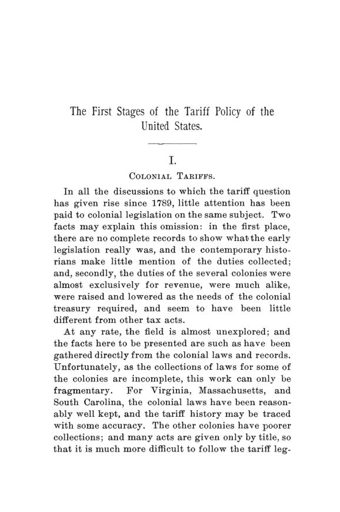

Hill, 1893: a primeira tarifa dos EUA já nasceu protecionista
Leitura: 10 min
William Hill refez o caminho das tarifas americanas, das colônias à lei de 1789, e concluiu que a primeira tarifa federal, tida como fiscal, foi desenhada para proteger a indústria nascente.


Primavera de 1789, Câmara dos Representantes, primeiro Congresso dos Estados Unidos. Clymer, deputado da Pensilvânia, pede proteção para o aço. Uma fornalha na Filadélfia, com uma ajuda muito pequena do legislativo estadual, fizera 300 toneladas em dois anos e já produzia 230 por ano. Com um pouco mais de estímulo, dizia ele, abasteceria a União inteira. Tucker, da Carolina do Sul, respondeu que o menor imposto sobre o aço seria um fardo para a agricultura. Aceitaria 5%, e nada além.
A cena está em The First Stages of the Tariff Policy of the United States, de William Hill, tutor de economia política na Universidade de Chicago, publicado em novembro de 1893 como o nº 6 do volume 8 das Publications. São quatro capítulos, das páginas 9 a 162, mais treze apêndices com leis estaduais, resoluções de comerciantes e cartas de jornal. A tese é direta: a tarifa de 1789, citada como lei de receita, foi pensada também, e talvez sobretudo, para proteger manufaturas.
Hill escolhe um adversário explícito. Condy Raguet, em Principles of Free Trade, de 1835, achava impensável que um imposto de cinco por cento servisse para estimular a indústria em 1789, quando a agricultura era o destino natural do capital:
“A ideia é absurda” (“The idea is preposterous”)
O que as colônias cobravam?
Quase só receita. Hill vasculhou as leis coloniais e encontrou quatro famílias de tributos: taxas sobre a tonelagem dos navios, impostos de exportação sobre o tabaco, impostos sobre a importação de escravos e as pautas regulares, em que vinhos e bebidas eram os itens principais. A primeira taxa de tonelagem é da Virgínia, em 1631, e era paga em pólvora: cem libras de pólvora e dez balas de ferro a cada cem toneladas, para a defesa dos portos.
A cobrança era frouxa. Nos anos anteriores à Revolução, Nova York importava não menos que £500 mil por ano, com tarifa de 5%, mas os direitos arrecadados mal passavam de £5 mil. Em 1769, o livro do tesoureiro de Massachusetts registrou £133 6s. 8d. recebidas “de mão desconhecida”: um contribuinte arrependido pagava o que devia sobre o rum e o melaço que contrabandeara. Quanto passou por consciências menos sensíveis, nota o autor, não há como saber.
Para Hill, as tarifas coloniais eram imitações dos meios comuns de receita europeus, e não há evidência direta de que tenham influenciado a política posterior. O ponto de virada está depois da guerra.
Como o livre-comércio virou proteção em quatro anos?
Durante a guerra, quase nenhum estado cobrou direitos de importação. Em 1783, Nova Jersey declarou seus portos livres de quaisquer tarifas. Quando Massachusetts, pressionada pela dívida, voltou a tributar importações em 1782, fez a lei valer só até seis meses depois da paz, e explicou no preâmbulo que restrições ao comércio eram altamente prejudiciais.
O que veio depois foi uma escalada. Em 1784, papel, velas, sabão e couro passaram de 2,5% para 7,5%; carruagens, selas, botas e sapatos pagavam 12,5%. Em 1785, algumas alíquotas chegaram a 25%, e o preâmbulo já falava em estimular agricultura e manufaturas e desestimular o luxo. A lei de 1786 proibiu de vez a importação de 58 artigos, abrindo mão de toda a receita que dariam.
A Pensilvânia andou menos, mas na mesma direção. A lei de 20 de setembro de 1785, feita para proteger as manufaturas do estado, tributava com alíquotas específicas altas mais de quarenta artigos que o estado começara a produzir. Hill a considera a base da tarifa federal de 1789. Os estados se copiavam: a lei de Rhode Island de 4 de agosto de 1785 saiu na Pennsylvania Gazette no dia 24, enquanto os deputados da Filadélfia redigiam a sua.
Por que a paz trouxe crise?
Porque trouxe dinheiro demais, e depois de menos. Exércitos franceses e ingleses, empréstimos externos e o comércio com Havana tinham enchido o país de moeda metálica no fim da guerra. Com a reabertura dos portos, os ingleses despejaram estoques acumulados em oito anos de mercado fechado, muitas vezes a crédito. John Jay escreveu a Benjamin Vaughn, em novembro de 1784, que se comerciava num ritmo louco e que aquele delírio não podia durar.
Para pagar a diferença, a moeda saiu do país. Os jornais se encheram de lamentos contra os agentes britânicos e o gosto por bugigangas importadas. Em Boston, comerciantes e artesãos se uniram num boicote aos agentes ingleses, mas divergiram no essencial: os artesãos queriam o mercado reservado ao produto americano; os comerciantes prometeram apoiar a indústria local em termos gerais, sem se comprometer a deixar de importar o que concorresse com ela.
Os fundadores eram livre-cambistas?
Em princípio, sim. Hill afirma que, com poucas exceções, talvez só uma importante, a de Hamilton, os líderes da Revolução defendiam o comércio sem restrições. Franklin foi o mais coerente e quase o único a não se converter à retaliação. Os demais mudaram quando a Inglaterra, por proclamação de julho de 1783, reservou a navios britânicos o comércio entre os Estados Unidos e as Índias Ocidentais. Madison escreveu a Jefferson em agosto de 1785:
“A liberdade perfeita é o sistema que eu escolheria” (“A perfect freedom is the system which would be my choice”)
Mas impôs duas condições: o país teria de estar sem dívidas, e todas as outras nações teriam de aderir. Hill observa que essas condições nunca se realizaram. John Adams, leitor de Quesnay e Adam Smith, chegou à mesma posição por outro caminho e a resumiu em carta de março de 1786:
“repelir monopólios com monopólios e responder a proibições com proibições” (“repel monopolies by monopolies and answer prohibitions by prohibitions”)
Por que a União não conseguia cobrar uma tarifa de 5%?
Porque precisava da concordância de todos os estados. Em 1781, o Congresso pediu autoridade para cobrar 5% sobre as importações. Todos concordaram, menos Rhode Island; depois, a Virgínia retirou seu consentimento. Em 1783, o pedido foi refeito, com coletores nomeados pelos estados e prazo máximo de 25 anos. Em agosto de 1786, só Nova York faltava. O governador George Clinton recusou-se a convocar sessão extraordinária, alegando razões constitucionais.
O que se decidiu em 1789?
Em abril de 1789, Madison propôs adotar de imediato a velha tarifa de receita, como medida temporária, para pegar as importações da primavera. Fitzsimmons, também da Pensilvânia, preferiu perder essa receita e apresentou uma lista de artigos que, salvo seis itens sem importância, eram todos tributados pela lei pensilvana de 1785. Sabia que seria mais fácil obter proteção na primeira lei do que substituir depois uma lei de receita bem aceita. Venceu. E, segundo Hill, ninguém na Câmara disse que a proteção era inconstitucional.
O debate seguiu artigo por artigo, cada deputado defendendo o que seu estado produzia. Fitzsimmons pediu 9 centavos por galão de cerveja; Madison propôs 8, e lembrou que Nova York já cobrava 6 e ainda importava. Clymer relatou que os moinhos da Pensilvânia produziam cerca de 70 mil resmas de papel por ano, tão baratas quanto as importadas. A Virgínia pediu 3 centavos por alqueire de carvão, porque o inglês chegava como lastro de navio. A taxa sobre o cânhamo, pedida pelo Sul e pelo Oeste, só seria cobrada a partir de dezembro de 1790, quando houvesse safra.
No Senado, o diário de William Maclay, da Pensilvânia, registra a resistência. Os importadores queriam atrasar a lei para trazer antes as mercadorias de verão, estocadas em Nova Jersey, onde não se pagavam direitos. Os preços subiram antes da tarifa, e, pelas contas de Maclay, um milhão de dólares saiu do bolso do público sem chegar ao Tesouro. O senador Butler, da Carolina do Sul, chegou a ameaçar a dissolução da União.
Leis mudam a economia, ou é o contrário?
Hill divide a década de 1780 em três fases: a crença no livre-comércio até 1784; a retaliação, até 1786 ou 1787; e a proteção como objetivo próprio, quando a Constituição foi adotada. Mas sua conclusão final vai contra a ideia de que as leis fizeram a indústria. A expansão comercial de 1793 a 1807 tirou a proteção da pauta, e a proteção só voltou a ser buscada no fim da guerra de 1812, quando as condições do pós-Revolução se repetiram em escala maior. Para o autor, as condições industriais produzem as leis com mais eficácia do que as leis mudam as condições industriais.
Na minha leitura
Na minha leitura, o livro de Hill é sobretudo um estudo de como uma doutrina cede à conjuntura. Os fundadores leram Adam Smith e o citavam com convicção; bastaram um choque de balança comercial, uma fuga de moeda e uma retaliação estrangeira para que o discurso mudasse em menos de três anos. A lição não é que o protecionismo estava certo ou errado, mas que a política comercial costuma nascer da pressão de quem perde, e que a primeira lei vira precedente. Fitzsimmons entendeu isso melhor que Madison: medidas apresentadas como provisórias tendem a ficar.
O outro fio do livro me parece ainda mais atual: a tarifa de 5% fracassou não por ser má, mas porque dependia da unanimidade. Sem capacidade de arrecadar, a União não pagava juros, e sem pagar juros não tinha crédito. A primeira tarifa federal foi, antes de tudo, a resposta a um problema de coordenação fiscal. Proteção e receita chegaram juntas, numa só lei, e por isso ficou tão difícil separá-las no debate dos cem anos seguintes.
Glossário
- Tarifa (impost)
- imposto cobrado sobre mercadorias importadas; na época, a principal fonte de receita indireta.
- Ad valorem
- direito calculado como percentual do valor da mercadoria.
- Direito específico
- valor fixo por unidade física, como centavos por galão ou por libra.
- Taxa de tonelagem
- cobrança sobre o navio, proporcional à sua capacidade de carga.
- Atos de Navegação
- leis inglesas que reservavam o comércio colonial a navios e mercadores britânicos.
- Balança comercial
- diferença entre exportações e importações de um país.
- Moeda metálica (specie)
- moedas de ouro e prata, o meio de pagamento internacional da época.
- Indústria nascente
- argumento de que setores novos precisam de proteção temporária até ganhar escala para competir.
Fontes
- The First Stages of the Tariff Policy of the United States (pp. 9–162). JSTOR · Internet Archive (PDF)
- Sumário da edição no JSTOR: Publications of the American Economic Association, vol. 8, nº 6.
Documento em domínio público (EUA, publicado antes de 1931), via JSTOR Early Journal Content e Internet Archive. Resumo e comentário do autor deste site, sem afiliação com a American Economic Association. Encontrou um erro? Escreva: a correção é publicada no próprio texto, com data.
← Nº 38 · Balch, 1893: a França que ajudava os pobres, mas não lhes devia nada Nº 40 · Seligman, 1894: o imposto progressivo é justo, mas cabe na prática? →